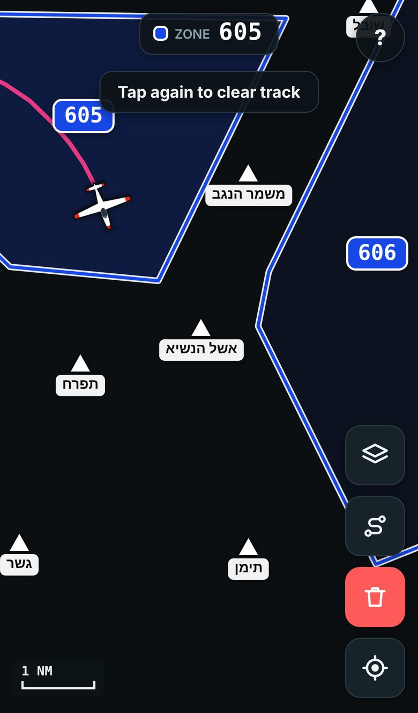

Snoniyot Moving Map
A phone moving map for the Snoniyot training areas: zones, reporting points, your aircraft position and flight track. Works without mobile signal once the map has been downloaded.
01First-time setup
Do this once, on the ground, with mobile signal or Wi-Fi.
- Open
zivoznovich.github.io/snoniyot-mapin Safari (iPhone) or Chrome (Android). - When the phone asks for your location, choose Allow. If you choose Allow While Using App, also keep Precise Location on.
- Add the app to the home screen. On iPhone, tap Share → Add to Home Screen. On Android, tap ⋮ → Add to Home screen (or Install app).
- From now on, open the app from the home-screen icon. On iPhone the icon keeps its own storage, separate from Safari.
- Leave the app open for about a minute. A small note at the bottom left shows Downloading map NN% and then ✓ Map ready for offline use.
- Test it: switch on airplane mode, close the app completely and open it again. The map, zones and points must appear.
If location is blocked
If the phone refuses location, a card with the steps below opens at the bottom of the screen. Follow them and tap Try again.

- Settings → Privacy & Security → Location Services: On.
- Same screen → Safari Websites (or Chrome) → While Using the App, with Precise Location on.
- In Safari: aA or ⋯ → Website Settings → Location → Allow.
If Precise Location is off, the phone reports a position that can be kilometres out. The app then shows Location is approximate – turn on Precise Location.
02The screen
The map fills the whole screen. Everything else is a small overlay that you can reach with your thumb.

- Zone badge (top centre). Shows ZONE and the number of the zone you are in. It is hidden when you are outside all zones. The zone you are in is also shaded a little darker on the map.
- Compass (top left). Appears only when the map is rotated. The red needle points to true north. Tap it to return to north up.
- Help ? (top right). Opens this manual.
- Aircraft. A Snonit (Grob G 120A) silhouette, drawn exactly on your GPS position and pointing along your track over the ground. The pale circle around it shows GPS accuracy.
- Flight track. A pink line showing where you have flown.
- Buttons (bottom right), from top to bottom: map mode, show or hide track, clear track, location. See the next sections.
- Scale bar (bottom left), in nautical miles.
Buttons at a glance
| Button | What it does |
|---|---|
| Map mode | Each tap switches Satellite → Topo → No background. The new mode's name appears briefly. The app remembers your choice. |
| Track | Shows or hides the flight track. When hidden, the icon is dimmed and crossed out. The track keeps recording while hidden. |
| Clear | Erases the track. Needs two taps: the first turns the button red, the second (within 3 seconds) clears. |
| Location | Centres the map on the aircraft and switches between North up and Track up. See section 3. |
03Following and orientation
The location button works the same way as in common flight apps. Its icon shows the current state.
| State | Button | Map behaviour | Tap the button to… |
|---|---|---|---|
| North up | Pink, arrow with “N” | Aircraft centred, north at the top, aircraft symbol turns with your track. | Switch to Track up |
| Track up | Pink, navigation arrow | Aircraft centred and always pointing up; the map turns around it. The compass appears. | Switch to North up |
| Not following | Grey, crosshair | The map stays where you left it. | Centre on the aircraft again, in the last orientation used |


- Moving the map with one finger stops following. If you don't touch the map for 20 seconds, it returns to the aircraft by itself.
- Pinching and rotating do not stop following. The aircraft stays in the centre while you zoom or turn the map.
- Rotating by hand (two-finger twist) leaves Track up and keeps the map at the angle you chose. Tap the compass or the location button to go back to North up.
- Track means your direction over the ground from GPS, not your magnetic heading. It includes wind drift. Below about 5 kt (taxiing or parked), the map doesn't rotate, so GPS noise can't spin it.
04Touch gestures
| Gesture | Action |
|---|---|
| One-finger drag | Move the map (stops following) |
| Pinch | Zoom in and out |
| Two-finger twist | Rotate the map |
| Double tap | Zoom in one step |
| Two-finger tap | Zoom out one step |
| Double tap, then drag up or down | One-handed zoom: drag down to zoom in, up to zoom out |
What changes with zoom
Labels shrink as you zoom out so the map doesn't clutter. Zoomed far out, the point names disappear and only triangles and zone numbers remain. Zoomed out over the whole country, only the zone outlines and numbers remain. The aircraft always keeps the same size.

05Map modes
| Mode | Background | Best for |
|---|---|---|
| Satellite | Esri World Imagery, slightly dimmed so the zones stand out. | Recognising fields, villages and roads below you. |
| Topo | Esri World Topographic map. | Roads, place names and terrain. |
| No background | Black. Zones and reporting points only. | The clearest picture, the least glare, and the lowest battery use. Works with no download at all. |
06Flight track
- The track starts recording when the app gets its first GPS position. A new point is added every 15 m of movement.
- The track is kept only while the app is open. Closing the app, or the phone stopping it in the background, starts a new track.
- Hiding the track does not stop the recording. Show it again and the whole flight is there.
- Clearing needs two taps within 3 seconds, so a stray touch in flight can't erase it.

07Zones and reporting points
Zones
Eight training zones are drawn as blue outlines with their number: 601, 602, 603, 604, 605, 606, 607 and 681. Altitude limits are intentionally not shown. Use the approved charts for them.
Reporting points
Each reporting point is a black triangle (white in No background mode), with the centre of the triangle on the point. The name is shown in Hebrew. Coordinates are WGS84, the same datum as GPS.
| Name | Latitude | Longitude | Decimal |
|---|---|---|---|
| רוחמה | N31°29.604′ | E34°42.307′ | 31.49339, 34.70512 |
| סעד | N31°27.834′ | E34°32.079′ | 31.46391, 34.53465 |
| בית קמה | N31°26.578′ | E34°46.012′ | 31.44297, 34.76686 |
| בית הגדי | N31°24.866′ | E34°36.415′ | 31.41443, 34.60692 |
| שובל | N31°24.489′ | E34°44.783′ | 31.40815, 34.74638 |
| מלילות | N31°23.365′ | E34°35.751′ | 31.38942, 34.59586 |
| משמר הנגב | N31°22.086′ | E34°42.780′ | 31.36810, 34.71301 |
| ברוש | N31°21.874′ | E34°37.128′ | 31.36457, 34.61880 |
| בטחה | N31°19.915′ | E34°37.892′ | 31.33191, 34.63153 |
| אשל הנשיא | N31°19.886′ | E34°41.980′ | 31.33144, 34.69966 |
| רנן | N31°19.730′ | E34°35.851′ | 31.32883, 34.59751 |
| תפרח | N31°19.373′ | E34°39.956′ | 31.32288, 34.66593 |
| פטיש | N31°19.260′ | E34°33.559′ | 31.32101, 34.55931 |
| צומת מעון | N31°18.706′ | E34°26.347′ | 31.31177, 34.43912 |
| קו מתח | N31°17.410′ | E34°35.819′ | 31.29017, 34.59699 |
| גשר | N31°16.819′ | E34°38.941′ | 31.28031, 34.64902 |
| תימן | N31°16.765′ | E34°42.772′ | 31.27941, 34.71286 |
The coordinates were measured from the triangles on the 1:100,000 map. On that map each triangle covers about 700 m on the ground, so a point is accurate to its printed position, not to a surveyed fix.
08Using it without signal
Mobile signal at altitude comes and goes. The app is built to work without it.
- The app itself (zones, points, buttons, this manual) is saved on the phone the first time you open it.
- Satellite and Topo backgrounds for the training area download automatically in the background whenever there is signal. This takes about 2,300 small images, from country-wide zoom down to roughly 1:50,000 detail. When it finishes, a note says ✓ Map ready for offline use. An interrupted download resumes by itself next time, and the map refreshes every 60 days.
- Zoomed in further than the downloaded detail, the background is enlarged and looks slightly soft. It never turns blank.
- Outside the training area, the background loads only with signal. Zones, points and your position always show.
- GPS does not need signal. The phone's GPS works in airplane mode on most phones.
09Messages
| Message | Meaning | What to do |
|---|---|---|
| Waiting for GPS… | No position yet. | Wait. Near a window is best. A cold start can take up to a minute. |
| No GPS update | No new position for more than 10 seconds. The aircraft is frozen at its last position. | Move the phone closer to the canopy. Check that location is still allowed. |
| Location is approximate – turn on Precise Location | The phone gives a coarse position (worse than 500 m). | Turn on Precise Location (section 1). |
| Location access needed card | The phone blocked location. | Follow the three steps, then tap Try again. |
| Outside training area – map here needs signal | You are outside the downloaded area. | Nothing to do. The background loads when there is signal. |
| Base map unavailable – no signal | Background images inside the training area could not load. | The download hasn't finished. Switch to No background, and let the download complete on the ground. |
| Downloading map NN% | Offline download in progress. | Keep the app open until it finishes. |
10Pre-flight checklist
- Open the app from the home-screen icon.
- ✓ Map ready for offline use has appeared at least once on this phone (not needed in No background mode).
- The aircraft appears at your real position on the ramp, and the accuracy circle is small.
- Choose the map mode and the orientation (North up or Track up).
- Clear the track from the previous flight if you want a clean one.
- Battery charged, or a cable connected. GPS with the screen on uses noticeable battery.
- Disable auto-lock, or check that the screen stays on with the app open.
- Mount the phone securely, near the canopy, where it doesn't obstruct any instrument.
11Troubleshooting
The aircraft does not appear
Location is off or not allowed. Follow section 1. On iPhone, check both Location Services and the setting for Safari.
The aircraft jumps or is in the wrong place
The GPS has a weak fix. Look at the accuracy circle: if it is large, give the phone a clear view of the sky. Check that Precise Location is on.
The map turns white or grey when zooming
The background for that area or zoom has not been downloaded and there is no signal. Use No background, or let the download finish on the ground.
The screen turns off
The app asks the phone to keep the screen on, but some phones and battery-saving modes refuse. Set auto-lock to Never for the flight, and turn off Low Power Mode.
The app stopped updating in the background
Phones pause web apps that are not on screen. Keep the app in front for the whole flight.
I don't see the latest version
Close the app completely and open it again while you have signal. If needed, do it twice: the first time downloads the new version, the second time shows it.
The map is rotated and I want north up
Tap the compass at the top left, or tap the location button until it shows the “N” arrow.
12Accuracy and data
- Source: Snoniyot training areas map, 1:100,000, September 2010.
- Georeferencing: the scan was fitted to the 1 km UTM grid printed on the map (zone 36N, ED50 datum, about 2,200 grid intersections), corrected for scan distortion square by square, and converted to WGS84. The printed latitude and longitude lines were used as an independent check.
- Zone boundaries: each edge was fitted to the centre of the printed blue line. Curved boundaries are followed with short segments.
- Expected accuracy: about 10–50 m on the ground, limited by the scan and the original map. Before your first flight, check on the ground that the aircraft sits in the right place.
- GPS: phone GPS is typically 5–15 m outdoors. Inside a cockpit it can be worse.
- Backgrounds: Satellite and Topo are Esri map services. Their own positional accuracy varies and is independent of the zones.
13Privacy and updates
- Your position never leaves the phone. The app has no server, no account and no tracking.
- Background images are requested from Esri by map tile. Like any online map, the requests show which area is being viewed, but they don't include your position.
- Settings (map mode, orientation, track visibility) are saved only on the phone.
- Updates are published to the same address and load automatically the next time the app opens with signal.